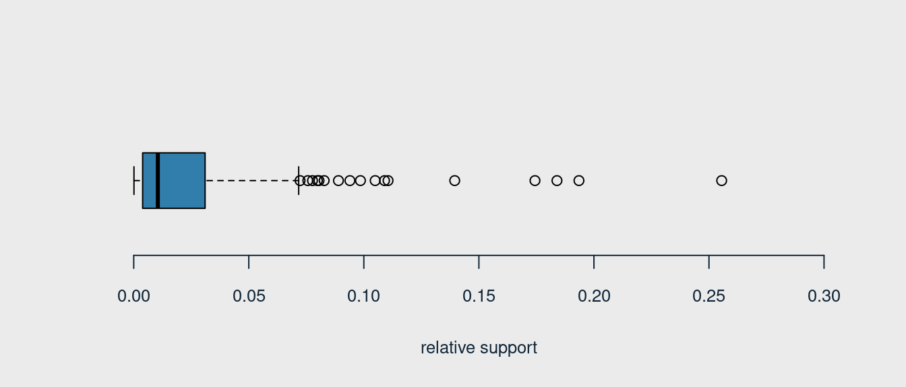

[1] "frankfurter" "sausage"
[3] "liver loaf" "ham"
[5] "meat" "finished products"
[7] "organic sausage" "chicken"
[9] "turkey" "pork"
[11] "beef" "hamburger meat"
[13] "fish" "citrus fruit"
[15] "tropical fruit" "pip fruit"
[17] "grapes" "berries"
[19] "nuts/prunes" "root vegetables"
[21] "onions" "herbs"
[23] "other vegetables" "packaged fruit/vegetables"
[25] "whole milk" "butter"
[27] "curd" "dessert"
[29] "butter milk" "yogurt"
[31] "whipped/sour cream" "beverages"
[33] "UHT-milk" "condensed milk"
[35] "cream" "soft cheese"
[37] "sliced cheese" "hard cheese"
[39] "cream cheese " "processed cheese"
[41] "spread cheese" "curd cheese"
[43] "specialty cheese" "mayonnaise"
[45] "salad dressing" "tidbits"
[47] "frozen vegetables" "frozen fruits"
[49] "frozen meals" "frozen fish"
[51] "frozen chicken" "ice cream"
[53] "frozen dessert" "frozen potato products"
[55] "domestic eggs" "rolls/buns"
[57] "white bread" "brown bread"
[59] "pastry" "roll products "
[61] "semi-finished bread" "zwieback"
[63] "potato products" "flour"
[65] "salt" "rice"
[67] "pasta" "vinegar"
[69] "oil" "margarine"
[71] "specialty fat" "sugar"
[73] "artif. sweetener" "honey"
[75] "mustard" "ketchup"
[77] "spices" "soups"
[79] "ready soups" "Instant food products"
[81] "sauces" "cereals"
[83] "organic products" "baking powder"
[85] "preservation products" "pudding powder"
[87] "canned vegetables" "canned fruit"
[89] "pickled vegetables" "specialty vegetables"
[91] "jam" "sweet spreads"
[93] "meat spreads" "canned fish"
[95] "dog food" "cat food"
[97] "pet care" "baby food"
[99] "coffee" "instant coffee"
[101] "tea" "cocoa drinks"
[103] "bottled water" "soda"
[105] "misc. beverages" "fruit/vegetable juice"
[107] "syrup" "bottled beer"
[109] "canned beer" "brandy"
[111] "whisky" "liquor"
[113] "rum" "liqueur"
[115] "liquor (appetizer)" "white wine"
[117] "red/blush wine" "prosecco"
[119] "sparkling wine" "salty snack"
[121] "popcorn" "nut snack"
[123] "snack products" "long life bakery product"
[125] "waffles" "cake bar"
[127] "chewing gum" "chocolate"
[129] "cooking chocolate" "specialty chocolate"
[131] "specialty bar" "chocolate marshmallow"
[133] "candy" "seasonal products"
[135] "detergent" "softener"
[137] "decalcifier" "dish cleaner"
[139] "abrasive cleaner" "cleaner"
[141] "toilet cleaner" "bathroom cleaner"
[143] "hair spray" "dental care"
[145] "male cosmetics" "make up remover"
[147] "skin care" "female sanitary products"
[149] "baby cosmetics" "soap"
[151] "rubbing alcohol" "hygiene articles"
[153] "napkins" "dishes"
[155] "cookware" "kitchen utensil"
[157] "cling film/bags" "kitchen towels"
[159] "house keeping products" "candles"
[161] "light bulbs" "sound storage medium"
[163] "newspapers" "photo/film"
[165] "pot plants" "flower soil/fertilizer"
[167] "flower (seeds)" "shopping bags"
[169] "bags" How to arrange the shop space to maximize profits?
A classic analysis answering the question of how to expand the store to maximize profits, i.e. what product combinations customers most often buy. Here you may also find the answer to why milk is always the farthest from the cash register.
In this analysis was used transaction data - Groceries database implemented in the arules package.
What Is Market Basket Analysis?
Market basket analysis is a data mining technique used by retailers to increase sales by better understanding customer purchasing patterns. It involves analyzing large data sets, such as purchase history, to reveal product groupings, as well as products that are likely to be purchased together.
Generally, Association Rule Mining can be viewed in a two-step process: 1. Find all Frequent itemsets( minSup ) 2. Generate Association Rules from the Frequent itemsets ( minSup & minConf )
1 INTRODUCTION
1.1 Description of the assigned task
The owner of the supermarket decided to invest the profit in development. Expansion of the store’s usable area and minor rearrangements are planned. In order to meet the needs of customers, the most popular product groups would be developed.
The products group to development and their possible location will be selected on the basis of the analysis of shopping lists (the most frequent), while their location would be determined by the most interesting/strongest association rules.
1.2 Main goals
- Selection of interesting association rules .
- Finding the best association rules.
- Finding practical applications of discovered rules.
2 EXPERIMENT - FREQUENT ITEMS
2.1 Data source - transactions data Groceries, products list and dataset characteristic
Data set size 9835, 169
All products available in transactions data Groceries
The transaction examples
items
[1] {citrus fruit,
semi-finished bread,
margarine,
ready soups}
[2] {tropical fruit,
yogurt,
coffee}
[3] {whole milk} items
[1] {chicken,
citrus fruit,
other vegetables,
butter,
yogurt,
frozen dessert,
domestic eggs,
rolls/buns,
rum,
cling film/bags}
[2] {semi-finished bread,
bottled water,
soda,
bottled beer}
[3] {chicken,
tropical fruit,
other vegetables,
vinegar,
shopping bags} The size of the vectors that define the sparse matrix of the data set Groceries where indices is defining products where 43367 is non-zero and pointers - another element of the sparse matrix with 9836 non-zero.
The data set structure
[1] "labels" "level2" "level1"The transactions ~ number of products
plot_barplot(tab_src = table(size(Groceries)))Distribution
plot_boxplot(tab_src = size(Groceries), v_line = 3, ylim = c(0, 40))
The sparse matrix of the dataset
SUMMARY - DATABASE CHARACTERISTICS
- The data set contains 9835 transactions composed of 169 items.
- The data set is rather spare (density of 0.02609146 -> 2,6%).
- The most frequent items is
whole milk- 2513 times; and next isother vegetables- 1903 times. - The typical transaction ( shopping list ) counts less than 5 items (average = 4.409) - median is 3;
- The data set contains extra meta data about items. They are grouped on two levels: level 1 (10 departments) and level 2 (55 product groups).
2.2 Product list analysis
Verification of data completeness, number of product groups and departments
- Are there any NAs?
[1] FALSE- List of items (level 1)
[1] "canned food" "detergent" "drinks"
[4] "fresh products" "fruit and vegetables" "meat and sausage"
[7] "non-food" "perfumery" "processed food"
[10] "snacks and candies" - Item list for products group (level 2)
$`baby food`
[1] "baby food"
$bags
[1] "shopping bags" "bags"
$`bakery improver`
[1] "baking powder" "preservation products"
$`bathroom cleaner`
[1] "toilet cleaner" "bathroom cleaner"
$beef
[1] "beef" "hamburger meat"
$beer
[1] "bottled beer" "canned beer"
$`bread and backed goods`
[1] "rolls/buns" "white bread" "brown bread"
[4] "pastry" "roll products " "semi-finished bread"
[7] "zwieback"
$candy
[1] "candy"
$`canned fish`
[1] "canned fish"
$`canned fruit/vegetables`
[1] "canned vegetables" "canned fruit" "pickled vegetables"
[4] "specialty vegetables"
$cheese
[1] "soft cheese" "sliced cheese" "hard cheese" "cream cheese "
[5] "processed cheese" "spread cheese" "curd cheese" "specialty cheese"
$`chewing gum`
[1] "chewing gum"
$chocolate
[1] "chocolate" "cooking chocolate" "specialty chocolate"
[4] "specialty bar" "chocolate marshmallow"
$cleaner
[1] "dish cleaner" "abrasive cleaner" "cleaner"
$coffee
[1] "coffee" "instant coffee"
$condiments
[1] "mustard" "ketchup" "spices"
$cosmetics
[1] "male cosmetics" "make up remover"
[3] "skin care" "female sanitary products"
[5] "baby cosmetics"
$`dairy produce`
[1] "whole milk" "butter" "curd"
[4] "dessert" "butter milk" "yogurt"
[7] "whipped/sour cream" "beverages"
$delicatessen
[1] "mayonnaise" "salad dressing" "tidbits"
$`dental care`
[1] "dental care"
$`detergent/softener`
[1] "detergent" "softener" "decalcifier"
$eggs
[1] "domestic eggs"
$fish
[1] "fish"
$`frozen foods`
[1] "frozen vegetables" "frozen fruits" "frozen meals"
[4] "frozen fish" "frozen chicken" "ice cream"
[7] "frozen dessert" "frozen potato products"
$fruit
[1] "citrus fruit" "tropical fruit" "pip fruit" "grapes"
[5] "berries" "nuts/prunes"
$`games/books/hobby`
[1] "sound storage medium" "newspapers" "photo/film"
$garden
[1] "pot plants" "flower soil/fertilizer" "flower (seeds)"
$`hair care`
[1] "hair spray"
$`hard drinks`
[1] "brandy" "whisky" "liquor"
[4] "rum" "liqueur" "liquor (appetizer)"
$`health food`
[1] "cereals" "organic products"
$`jam/sweet spreads`
[1] "jam" "sweet spreads"
$`long-life bakery products`
[1] "long life bakery product" "waffles"
[3] "cake bar"
$`meat spreads`
[1] "meat spreads"
$`non-alc. drinks`
[1] "bottled water" "soda" "misc. beverages"
[4] "fruit/vegetable juice" "syrup"
$`non-food house keeping products`
[1] "kitchen towels" "house keeping products" "candles"
[4] "light bulbs"
$`non-food kitchen`
[1] "dishes" "cookware" "kitchen utensil" "cling film/bags"
$`packaged fruit/vegetables`
[1] "packaged fruit/vegetables"
$perfumery
[1] "hygiene articles" "napkins"
$`personal hygiene`
[1] "rubbing alcohol"
$`pet food/care`
[1] "dog food" "cat food" "pet care"
$pork
[1] "pork"
$poultry
[1] "chicken" "turkey"
$`pudding powder`
[1] "pudding powder"
$sausage
[1] "frankfurter" "sausage" "liver loaf"
[4] "ham" "meat" "finished products"
[7] "organic sausage"
$`seasonal products`
[1] "seasonal products"
$`shelf-stable dairy`
[1] "UHT-milk" "condensed milk" "cream"
$snacks
[1] "salty snack" "popcorn" "nut snack" "snack products"
$soap
[1] "soap"
$`soups/sauces`
[1] "soups" "ready soups" "Instant food products"
[4] "sauces"
$`staple foods`
[1] "potato products" "flour" "salt" "rice"
[5] "pasta"
$sweetener
[1] "sugar" "artif. sweetener" "honey"
$`tea/cocoa drinks`
[1] "tea" "cocoa drinks"
$vegetables
[1] "root vegetables" "onions" "herbs" "other vegetables"
$`vinegar/oils`
[1] "vinegar" "oil" "margarine" "specialty fat"
$wine
[1] "white wine" "red/blush wine" "prosecco" "sparkling wine"- The number of items in each products groups
plot_barplot(tab_src = table(len_list_lvl2), h_line = 3,
xlab = "number of products in group", ylab = "number of products' group")- Transactions by items (level 1)
items
[1] {citrus fruit,
semi-finished bread,
margarine,
ready soups}
[2] {tropical fruit,
yogurt,
coffee}
[3] {whole milk} - Transactions by products group (level 2)
items
[1] {bread and backed goods,
fruit,
soups/sauces,
vinegar/oils}
[2] {coffee,
dairy produce,
fruit}
[3] {dairy produce} SUMMARY - ITEMS AND PRODUCTS GROUPS
- Meta information stored in level 1 defines the most general division into departments in the store, of which there are 10.
- Meta information stored in level 2 defines 55 products group.
- Due to the quality of the analysis, it was decided that an analysis based on items and, on a more general level as products group would be more appropriate for the preparation of management decisions. In the further part of the material, the analysis is carried out in two ways - for items and products groups.
- In level 2 196 items were divided into 55 products group. As average products group has 3 items, but 7 products group has 6 or more items.
2.2.1 Visualisation for items from Groceries
- 20 items with the highest relative support
plot_freq(tab_src = Groceries, v_line = 0.05, topN = 20)- The items with min relative support equals 0.10
plot_freq(tab_src = Groceries, v_line = 0.10, support = 0.10)- The items with min relative support equals 0.05
plot_freq(tab_src = Groceries, v_line = 0.05, support = 0.05)2.2.2 Visualisation for product groups from Groceries ( level_2 )
- 20 product groups with the highest relative support
plot_freq(tab_src = Groceries_lvl2, v_line = 0.05, topN = 20)- The product groups with min relative support equals 0.10
plot_freq(tab_src = Groceries_lvl2, v_line = 0.10, support = 0.10)- The product groups with min relative support equals 0.05
plot_freq(tab_src = Groceries_lvl2, v_line = 0.05, support = 0.05)2.2.3 Support and relative support for items
Relative support may be interpreted as probabilities (i.e. absolute support/9835)
plot_boxplot(tab_src = tab_freq, xlab = "relative support", ylim = c(0, 0.3))
List of items ordered by decreasing value of relative support
The items with the highest…
whole milk other vegetables rolls/buns soda
0.2555160 0.1934926 0.1839349 0.1743772
yogurt bottled water
0.1395018 0.1105236 ..and the lowest relative support
baby cosmetics kitchen utensil bags
0.0006100661 0.0004067107 0.0004067107
preservation products baby food sound storage medium
0.0002033554 0.0001016777 0.0001016777 The support (absolute) for items (number of transaction for each item)
plot_boxplot(tab_src = tab_freq_ab, xlab = "support", ylim = c(0, 3000))The proposal of items with z minSup & minrSup
- items with relative support > 20% (absolute support: 1968 = 0.20 * 9835)
– count: 1
– example:
whole milk
0.255516 - items with relative support >= 10% (absolute support: 984 = 0.10 * 9835)
– count: 8
– example:
whole milk other vegetables rolls/buns soda
0.2555160 0.1934926 0.1839349 0.1743772
yogurt bottled water root vegetables tropical fruit
0.1395018 0.1105236 0.1089985 0.1049314 - items with relative support >= 5% (absolute support: 490 = 0.05 * 9835)
– count: 28
– example:
whole milk other vegetables rolls/buns
0.25551601 0.19349263 0.18393493
soda yogurt bottled water
0.17437722 0.13950178 0.11052364
root vegetables tropical fruit shopping bags
0.10899847 0.10493137 0.09852567
sausage pastry citrus fruit
0.09395018 0.08896797 0.08276563
bottled beer newspapers canned beer
0.08052872 0.07981698 0.07768175
pip fruit fruit/vegetable juice whipped/sour cream
0.07564820 0.07229283 0.07168277
brown bread domestic eggs frankfurter
0.06487036 0.06344687 0.05897306
margarine coffee pork
0.05856634 0.05805796 0.05765125
butter curd beef
0.05541434 0.05327911 0.05246568
napkins
0.05236401 - items with absolute support >= 100 (~>1%)
– count: 88
– example:
whole milk other vegetables rolls/buns soda
2513 1903 1809 1715
yogurt
1372 2.2.4 The most frequent items
List of the most frequent items with relative support equal 10% (984 transactions: minSup = 984, minrSup = 0.10)
[1] "whole milk" "other vegetables" "rolls/buns" "soda"
[5] "yogurt" "bottled water" "root vegetables" "tropical fruit" The most frequent items belongs to groups:
level2
1 fruit
2 vegetables
4 dairy produce
6 bread and backed goods
7 non-alc. drinksCONCLUSIONS
The most frequent items are: (= frequent items with support greater than minSup = 984)
[1] "whole milk" "other vegetables" "rolls/buns" "soda"
[5] "yogurt" "bottled water" "root vegetables" "tropical fruit" The most frequent items belong to the following products groups
| product group | # | items |
|---|---|---|
| bread and backed goods | 1 | “rolls/buns” |
| dairy produce | 2 | “whole milk” “yogurt” |
| fruit | 1 | “tropical fruit” |
| non-alc. drinks | 2 | “soda” “bottled water” |
| vegetables | 2 | “other vegetables” “root vegetables” |
VALIDATION (apriori for frequent items)
list_pop_products_spr <-
apriori(data = Groceries,
parameter = list(support = 0.003, confidence = 0.2,
target = "frequent itemsets"))List of the most frequent items with minSup equals 984
inspect(sort(subset(list_pop_products_spr, subset = count > 984))) items support count
[1] {whole milk} 0.2555160 2513
[2] {other vegetables} 0.1934926 1903
[3] {rolls/buns} 0.1839349 1809
[4] {soda} 0.1743772 1715
[5] {yogurt} 0.1395018 1372
[6] {bottled water} 0.1105236 1087
[7] {root vegetables} 0.1089985 1072
[8] {tropical fruit} 0.1049314 1032 Thus, using the alternative method, the same result was obtained.
2.2.5 Support and relative support of product groups (level2)
Relative support may be interpreted as probabilities (i.e. absolute support/9835)
List of items ordered by decreasing value of relative support
plot_boxplot(tab_src = tab_freq_lvl2, xlab = "relative support", ylim = c(0, 0.5))The product groups with the highest…
dairy produce bread and backed goods non-alc. drinks
0.4430097 0.3455008 0.3179461
vegetables fruit sausage
0.2730046 0.2491103 0.1891205 ..and the lowest relative support
fish soap pudding powder hair care
0.0029486528 0.0026436197 0.0023385867 0.0011184545
personal hygiene baby food
0.0010167768 0.0001016777 The support (absolute) for items (number of transaction for each item)
plot_boxplot(tab_src = tab_freq_lvl2_ab, xlab = "support", ylim = c(0, 5000))The proposal of products group with z minSup & minrSup
- products group with relative support > 20% (absolute support: 1968 = 0.20 * 9835)
– count: 5
– example:
dairy produce bread and backed goods non-alc. drinks
0.4430097 0.3455008 0.3179461
vegetables fruit
0.2730046 0.2491103 - products group with relative support >= 10% (absolute support: 984 = 0.10 * 9835)
– count: 10
– example:
dairy produce bread and backed goods non-alc. drinks
0.4430097 0.3455008 0.3179461
vegetables fruit
0.2730046 0.2491103 - products group with relative support >= 5% (absolute support: 490 = 0.05 * 9835)
– count: 21
– example:
dairy produce bread and backed goods non-alc. drinks
0.4430097 0.3455008 0.3179461
vegetables fruit
0.2730046 0.2491103 - products groups with absolute support >= 100 (~>1%)
– count: 44
– example:
dairy produce bread and backed goods non-alc. drinks
4357 3398 3127
vegetables fruit
2685 2450 2.2.6 The most frequent products groups (level2)
List of the most frequent products groups with relative support equal 10% (984 transakcje: minSup = 984, minrSup = 0.10)
(list_pop_gr_products <-
names(sort(tab_freq_lvl2_ab[tab_freq_lvl2_ab > 984], decreasing = TRUE))) [1] "dairy produce" "bread and backed goods" "non-alc. drinks"
[4] "vegetables" "fruit" "sausage"
[7] "beer" "cheese" "frozen foods"
[10] "chocolate" CONCLUSIONS
The most frequent products group are:
dairy produceoccur in 4357 out of 9835 transactions (44,3%).bread and backed goodsoccur in w 3398 out of 9835 transactions (34,5%).non-alc. drinksoccur in 3127 out of 9835 transactions (31,8%).vegetablesoccur in 2685 out of 9835 transactions (27,3%).fruitoccur in 2450 out of 9835 transactions (24,9%).
VALIDATION (apriori for frequent products groups)
list_pop_gr_products_spr <-
apriori(data = Groceries_lvl2,
parameter = list(support = 0.003, confidence = 0.2,
target = "frequent itemsets"))List of the most frequent products groups with minSup equals 984
inspect(sort(subset(list_pop_gr_products_spr, subset = count > 984))) items support count
[1] {dairy produce} 0.4430097 4357
[2] {bread and backed goods} 0.3455008 3398
[3] {non-alc. drinks} 0.3179461 3127
[4] {vegetables} 0.2730046 2685
[5] {fruit} 0.2491103 2450
[6] {sausage} 0.1891205 1860
[7] {bread and backed goods, dairy produce} 0.1876970 1846
[8] {dairy produce, vegetables} 0.1704118 1676
[9] {dairy produce, fruit} 0.1563803 1538
[10] {beer} 0.1555669 1530
[11] {dairy produce, non-alc. drinks} 0.1519065 1494
[12] {cheese} 0.1266904 1246
[13] {bread and backed goods, non-alc. drinks} 0.1242501 1222
[14] {frozen foods} 0.1169293 1150
[15] {bread and backed goods, vegetables} 0.1162176 1143
[16] {chocolate} 0.1087951 1070
[17] {bread and backed goods, fruit} 0.1075750 1058
[18] {dairy produce, sausage} 0.1073716 1056
[19] {fruit, vegetables} 0.1070666 1053
[20] {bread and backed goods, sausage} 0.1036096 1019 This confirms the previous results - the same list of the most frequent product groups was obtained.
2.2.7 The frequent items and the frequent products groups
Analysis of which items are frequent and from which products groups with the greatest support (>30% of transactions, i.e. for the first three)
ATTENTION Confirmation of the observation that the support of a frequent group is ‘built’ by two-three products (horizontal lines on plots = average for given group)
- products group dairy produce - list of items with value of relative support
relative support
whole milk 0.25551601
yogurt 0.13950178
whipped/sour cream 0.07168277
butter 0.05541434
curd 0.05327911
dessert 0.03711235
butter milk 0.02796136
beverages 0.02602949plot_barplot(tab_src = rev(gr_prod_1), v_line = mean(gr_prod_1),
horiz_flag = TRUE, xlab = "relative support")- products group bread and backed goods - list of items with value of relative support
relative support
rolls/buns 0.183934926
pastry 0.088967972
brown bread 0.064870361
white bread 0.042094560
semi-finished bread 0.017691917
roll products 0.010269446
zwieback 0.006914082plot_barplot(tab_src = rev(gr_prod_2), v_line = mean(gr_prod_2),
horiz_flag = TRUE, xlab = "relative support", xlim = c(0, 0.25))- products group non-alc. drinks - list of items with value of relative support
relative support
soda 0.174377224
bottled water 0.110523640
fruit/vegetable juice 0.072292832
misc. beverages 0.028368073
syrup 0.003253686plot_barplot(tab_src = rev(gr_prod_3), v_line = mean(gr_prod_3),
horiz_flag = TRUE, xlab = "relative support", xlim = c(0, 0.25))3 EXPERIMENT - ASSOCIATION RULES
Reminder
Any association rule is based on an IF-THEN condition, i.e., an antecedent and a consequence, LHS and RHS.
Rules that satisfy both a minimum support threshold (called minSup) and a minimum confidence threshold (called minConf ) are called Strong.
Three version of strong rule-finding experiment were run. Each of them was conducted separately for items and for products groups (level 2)
| Approach | minSup | minConf |
|---|---|---|
| 1st | 0.003 | 0.2 |
| 2nd | 0.03 | 0.2 |
| 3rd | 0.003 | 0.5 |
3.1 Model apriori for items - 1st approach
ap_param <- new("APparameter", "confidence" = 0.2, "support" = 0.003)
rules_groc <- apriori(data = Groceries, ap_param)Apriori
Parameter specification:
confidence minval smax arem aval originalSupport maxtime support minlen
0.2 0.1 1 none FALSE TRUE 5 0.003 1
maxlen target ext
10 rules TRUE
Algorithmic control:
filter tree heap memopt load sort verbose
0.1 TRUE TRUE FALSE TRUE 2 TRUE
Absolute minimum support count: 29
set item appearances ...[0 item(s)] done [0.00s].
set transactions ...[169 item(s), 9835 transaction(s)] done [0.00s].
sorting and recoding items ... [136 item(s)] done [0.00s].
creating transaction tree ... done [0.00s].
checking subsets of size 1 2 3 4 5 done [0.00s].
writing ... [2246 rule(s)] done [0.00s].
creating S4 object ... done [0.00s].Assumptions:
- assumed \(minSup = 0.003\) means that item must have absolute support over 29 transactions
- assumed \(minConf = 0.2\) means that if LHS contains selected item that 20% of RHS will follow the rule
plot_barplot(tab_src = table(size(rules_groc)), xlab = "length of rule")
Summary:
2246 association rules were found for the requested search parameters
67,4% rules - 1514 z 2246 - have a length (LHS+RHS) of 3 (elements)
inspect(sort(rules_groc, by = "lift")[1:10]) lhs rhs support confidence coverage lift count
[1] {Instant food products} => {hamburger meat} 0.003050330 0.3797468 0.008032537 11.421438 30
[2] {flour} => {sugar} 0.004982206 0.2865497 0.017386884 8.463112 49
[3] {processed cheese} => {white bread} 0.004168785 0.2515337 0.016573462 5.975445 41
[4] {citrus fruit,
tropical fruit,
other vegetables,
whole milk} => {root vegetables} 0.003152008 0.6326531 0.004982206 5.804238 31
[5] {tropical fruit,
root vegetables,
other vegetables,
whole milk} => {citrus fruit} 0.003152008 0.4492754 0.007015760 5.428284 31
[6] {liquor} => {bottled beer} 0.004677173 0.4220183 0.011082867 5.240594 46
[7] {citrus fruit,
root vegetables,
other vegetables,
whole milk} => {tropical fruit} 0.003152008 0.5438596 0.005795628 5.183004 31
[8] {berries,
whole milk} => {whipped/sour cream} 0.004270463 0.3620690 0.011794611 5.050990 42
[9] {herbs,
whole milk} => {root vegetables} 0.004168785 0.5394737 0.007727504 4.949369 41
[10] {tropical fruit,
whole milk,
yogurt} => {curd} 0.003965430 0.2617450 0.015149975 4.912713 39
Reminder
If the value lift = x for given rule, it means that items from LHS and RHS occur with each other x times more often compared to transactions, where these items occur independently.
Instant food products&hamburger meatare purchased 11 times more often together than separately (rule [1]),processed cheese&white breadare purchased 8,5 times more often together than separately (rule [3])
inspect(sort(rules_groc, by = "confidence")[1:10]) lhs rhs support confidence coverage lift count
[1] {citrus fruit,
tropical fruit,
root vegetables,
whole milk} => {other vegetables} 0.003152008 0.8857143 0.003558719 4.577509 31
[2] {root vegetables,
butter,
yogurt} => {whole milk} 0.003050330 0.7894737 0.003863752 3.089723 30
[3] {citrus fruit,
tropical fruit,
root vegetables} => {other vegetables} 0.004473818 0.7857143 0.005693950 4.060694 44
[4] {root vegetables,
other vegetables,
brown bread} => {whole milk} 0.003152008 0.7750000 0.004067107 3.033078 31
[5] {onions,
butter} => {whole milk} 0.003050330 0.7500000 0.004067107 2.935237 30
[6] {tropical fruit,
curd,
yogurt} => {whole milk} 0.003965430 0.7500000 0.005287239 2.935237 39
[7] {curd,
domestic eggs} => {whole milk} 0.004778851 0.7343750 0.006507372 2.874086 47
[8] {tropical fruit,
butter,
yogurt} => {whole milk} 0.003355363 0.7333333 0.004575496 2.870009 33
[9] {tropical fruit,
root vegetables,
whipped/sour cream} => {other vegetables} 0.003355363 0.7333333 0.004575496 3.789981 33
[10] {butter,
curd} => {whole milk} 0.004880529 0.7164179 0.006812405 2.803808 48
Reminder
It the value of confidence = x for the rule, which means that every time when items form LHS was in transaction, x times of them contains also items form RHS.
\(conf(X->Y)\) may be interpreted as conditional probability \(P(Y|X)\)
if
citrus fruit,tropical fruit,root vegetables,whole milkthen in 88% of transaction alsoother vegetables(rule [1]);if
root vegetables,butter&yogurtthen in 79% of transaction alsowhole milk(rule [2]);if
citrus fruit,tropical fruit,root vegetablesthen in 79% of transaction alsoother vegetables(rule [3]),
inspect(sort(rules_groc, by = "support")[1:10]) lhs rhs support confidence coverage
[1] {} => {whole milk} 0.25551601 0.2555160 1.0000000
[2] {other vegetables} => {whole milk} 0.07483477 0.3867578 0.1934926
[3] {whole milk} => {other vegetables} 0.07483477 0.2928770 0.2555160
[4] {rolls/buns} => {whole milk} 0.05663447 0.3079049 0.1839349
[5] {whole milk} => {rolls/buns} 0.05663447 0.2216474 0.2555160
[6] {yogurt} => {whole milk} 0.05602440 0.4016035 0.1395018
[7] {whole milk} => {yogurt} 0.05602440 0.2192598 0.2555160
[8] {root vegetables} => {whole milk} 0.04890696 0.4486940 0.1089985
[9] {root vegetables} => {other vegetables} 0.04738180 0.4347015 0.1089985
[10] {other vegetables} => {root vegetables} 0.04738180 0.2448765 0.1934926
lift count
[1] 1.000000 2513
[2] 1.513634 736
[3] 1.513634 736
[4] 1.205032 557
[5] 1.205032 557
[6] 1.571735 551
[7] 1.571735 551
[8] 1.756031 481
[9] 2.246605 466
[10] 2.246605 466
Reminder
It the value of relative support = x for the rule, which means that x transactions contain products listed in the LHS and RHS.
the rule of relative support of 0.25 means that in 25% of transactions there is
whole milk(count = 2513)(rule [1]);rule
whole milk<=>other vegetablesof relative support of 0.075 means thatwhole milk&other vegetablesoccur in 7,5% of transactions (here: what is the successor and what is the antecedent is not important) (rule [2], [3]);rule
rolls/buns<=>yogurtof relative support of 0.075 means thatrolls/buns&yogurtoccur in 7,5% of transactions (here: what is the successor and what is the antecedent is not important) (rule [4], [5]).
Quality of received rules (overview)
plot_boxplot(tab_src = quality(rules_groc)["support"], box_col = col_0, ylim = c(0, 0.02), outline = FALSE)plot_boxplot(tab_src = quality(rules_groc)["confidence"], box_col = col_2, ylim = c(0, 1))plot_boxplot(tab_src = quality(rules_groc)["lift"], box_col = col_4, ylim = c(0, 12))Conclusions on rule quality
- Max value of relative support is 25,5% (absolute support 2513), average value is 0,6% (61,8) - which almost coincides with the 3/4 quantile
- Max value of confidence is 88,5%, and min = 20%, average value is 36,7% (it can be roughly said that in 1 out of 3 cases, after purchasing LHS items, RHS items are purchased)
- Max value of lift is 11,4, but it is an outlier. Average value is 2,25 (Over 4, outliers start)
Rule length analysis
plot_barplot(tab_src = table(size(rules_groc)), xlab = "length of rule")
Conclusions regarding the length of rules
67,4% (1514 out of 2246) rules have length (LHS+RHS) of 3 (rules contains 3 item)
17% and 15,7% of rules have length appropriately - 2 & 4
there is one rule where LHS is the empty set.
Length analysis of LHS and RHS
summary(size(rules_groc@rhs)) Min. 1st Qu. Median Mean 3rd Qu. Max.
1 1 1 1 1 1 All antecedents have length 1.
summary(size(rules_groc@lhs)) Min. 1st Qu. Median Mean 3rd Qu. Max.
0.000 2.000 2.000 2.001 2.000 4.000 plot_barplot(tab_src = table(size(rules_groc@lhs)))- 67,4% (1514 out of 2246) rules have a consequence with length of 2
- sets of rules where the consequence has a length of 1 and 3 are 16% of all for each length
3.2 Model apriori for products group - 1st approach
rules_groc_lvl2 <- apriori(data = Groceries_lvl2,
parameter = list(support = 0.003, confidence = 0.2, minlen = 2))Apriori
Parameter specification:
confidence minval smax arem aval originalSupport maxtime support minlen
0.2 0.1 1 none FALSE TRUE 5 0.003 2
maxlen target ext
10 rules TRUE
Algorithmic control:
filter tree heap memopt load sort verbose
0.1 TRUE TRUE FALSE TRUE 2 TRUE
Absolute minimum support count: 29
set item appearances ...[0 item(s)] done [0.00s].
set transactions ...[55 item(s), 9835 transaction(s)] done [0.00s].
sorting and recoding items ... [49 item(s)] done [0.00s].
creating transaction tree ... done [0.00s].
checking subsets of size 1 2 3 4 5 6 7 done [0.01s].
writing ... [8411 rule(s)] done [0.00s].
creating S4 object ... done [0.00s].Assumptions:
- assumed \(minSup = 0.003\) means that products group must have absolute support over 29 transactions
- assumed \(minConf = 0.2\) means that if LHS contains selected products group that 20% of RHS will follow the rule
- assumed \(minLen = 2\) means that rule has to have minimum two items
plot_barplot(tab_src = table(size(rules_groc_lvl2)), xlab = "lengthof rule")Summary:
8411 association rules were found for the requested search parameters
42% of the rules - 3548 out of 8411 - have a length (LHS+RHS) of 4 (4 elements); 27% and 22% of the rules - have a length of 3 and 5 elements respectively.
inspect(sort(rules_groc_lvl2, by = "lift")[1:10]) lhs rhs support confidence coverage lift count
[1] {dairy produce,
sweetener,
vinegar/oils} => {staple foods} 0.003253686 0.4637681 0.007015760 9.158955 32
[2] {sweetener,
vinegar/oils} => {staple foods} 0.003660397 0.4186047 0.008744281 8.267022 36
[3] {dairy produce,
staple foods,
vinegar/oils} => {sweetener} 0.003253686 0.3076923 0.010574479 8.026933 32
[4] {staple foods,
vinegar/oils} => {sweetener} 0.003660397 0.2880000 0.012709710 7.513210 36
[5] {dairy produce,
fruit,
sweetener} => {staple foods} 0.003965430 0.3451327 0.011489578 6.816025 39
[6] {dairy produce,
non-alc. drinks,
sweetener} => {staple foods} 0.003558719 0.3181818 0.011184545 6.283771 35
[7] {dairy produce,
sweetener,
vegetables} => {staple foods} 0.003965430 0.3145161 0.012608033 6.211378 39
[8] {dairy produce,
fruit,
staple foods} => {sweetener} 0.003965430 0.2363636 0.016776817 6.166144 39
[9] {dairy produce,
sweetener} => {staple foods} 0.007727504 0.3003953 0.025724453 5.932505 76
[10] {fruit,
sweetener} => {staple foods} 0.004270463 0.2957746 0.014438231 5.841252 42
Reminder
If the value lift = x for given rule, it means that items from LHS and RHS occur with each other x times more often compared to transactions, where these items occur independently.
products groups
dairy produce,sweetener,vinegar/oilswithstaple foodsare 9,2 times more often purchased together than separately (applies to LHS and RHS) (rule [1]),products groups
sweetener&vinegar/oilsare purchased together withstaple foods8,3 more often purchased together than separately (rule [2])rule [3] is very similar to [1] but \(lift = 8.0\)
rule [4] is very similar to [2] but \(lift = 7.5\)
inspect(sort(rules_groc_lvl2, by = "confidence")[1:10]) lhs rhs support confidence coverage lift count
[1] {chocolate,
fruit,
staple foods} => {dairy produce} 0.003558719 1.0000000 0.003558719 2.257287 35
[2] {eggs,
fruit,
staple foods} => {dairy produce} 0.003660397 0.9729730 0.003762074 2.196279 36
[3] {cheese,
eggs,
perfumery} => {dairy produce} 0.003660397 0.9729730 0.003762074 2.196279 36
[4] {eggs,
fruit,
non-alc. drinks,
vinegar/oils} => {dairy produce} 0.003457041 0.9714286 0.003558719 2.192793 34
[5] {frozen foods,
fruit,
non-alc. drinks,
staple foods} => {dairy produce} 0.003152008 0.9687500 0.003253686 2.186747 31
[6] {frozen foods,
fruit,
non-alc. drinks,
vinegar/oils} => {dairy produce} 0.003050330 0.9677419 0.003152008 2.184471 30
[7] {bread and backed goods,
cheese,
fruit,
non-alc. drinks,
perfumery} => {dairy produce} 0.003050330 0.9677419 0.003152008 2.184471 30
[8] {bread and backed goods,
fruit,
pork,
sausage} => {dairy produce} 0.004880529 0.9600000 0.005083884 2.166996 48
[9] {bread and backed goods,
cheese,
non-alc. drinks,
perfumery} => {dairy produce} 0.004270463 0.9545455 0.004473818 2.154683 42
[10] {bread and backed goods,
eggs,
fruit,
vinegar/oils} => {dairy produce} 0.003863752 0.9500000 0.004067107 2.144423 38
Reminder
It the value of confidence = x for the rule, which means that every time when items form LHS was in transaction, x times of them contains also items form RHS.
\(conf(X->Y)\) may be interpreted as conditional probability \(P(Y|X)\)
- if products groups
chocolate,fruit&staple foodsthen with confidence 100% also products groupdairy produce(rule [1])
NOTE Because products group dairy produce occurs in 44% of transactions - it builds high-confidence rules when in a consequence. It follows from the definition \(conf(X->Y) = sup(X->Y) / sup(X)\) (dairy produce are building value \(sup(X->Y)\))
What the rules look like when dairy produceis an antecedent?
inspect(
sort(
subset(rules_groc_lvl2, subset = lhs %in% "dairy produce" & confidence > 0.80),
by = "confidence")) lhs rhs support confidence coverage lift count
[1] {dairy produce,
frozen foods,
fruit,
poultry} => {vegetables} 0.004168785 0.8367347 0.004982206 3.064911 41
[2] {chocolate,
dairy produce,
non-alc. drinks,
sausage,
vegetables} => {bread and backed goods} 0.003558719 0.8333333 0.004270463 2.411958 35
[3] {cheese,
dairy produce,
fruit,
staple foods} => {vegetables} 0.003863752 0.8260870 0.004677173 3.025909 38
[4] {dairy produce,
non-alc. drinks,
poultry,
sausage} => {bread and backed goods} 0.004067107 0.8163265 0.004982206 2.362734 40
[5] {dairy produce,
poultry,
staple foods} => {vegetables} 0.003965430 0.8125000 0.004880529 2.976141 39
[6] {chocolate,
dairy produce,
fruit,
non-alc. drinks,
sausage} => {bread and backed goods} 0.004372140 0.8113208 0.005388917 2.348246 43
[7] {beef,
dairy produce,
fruit,
pork} => {vegetables} 0.003457041 0.8095238 0.004270463 2.965239 34
[8] {dairy produce,
fruit,
non-alc. drinks,
sausage,
vinegar/oils} => {bread and backed goods} 0.003863752 0.8085106 0.004778851 2.340112 38
[9] {chocolate,
dairy produce,
long-life bakery products,
sausage} => {bread and backed goods} 0.004270463 0.8076923 0.005287239 2.337744 42
[10] {chocolate,
dairy produce,
non-alc. drinks,
sausage} => {bread and backed goods} 0.007015760 0.8023256 0.008744281 2.322211 69NOTE The rules with products group dairy produce in an antecedent have also relatively high confidence, and additionally in consequence are products groups with highest support like bread and backed goods & vegetables (quite big \(sup(X->Y)\)) - 3 out of 258 rules as example:
inspect(
sort(
subset(rules_groc_lvl2, subset = lhs %in% "bread and backed goods" & confidence > 0.80),
by = "confidence")[c(1, 129, 258)]) lhs rhs support confidence coverage lift count
[1] {bread and backed goods,
cheese,
fruit,
non-alc. drinks,
perfumery} => {dairy produce} 0.003050330 0.9677419 0.003152008 2.184471 30
[2] {bread and backed goods,
cheese,
frozen foods,
sausage,
vegetables} => {dairy produce} 0.003457041 0.8500000 0.004067107 1.918694 34
[3] {bread and backed goods,
perfumery,
vegetables} => {dairy produce} 0.013523132 0.8012048 0.016878495 1.808549 133FUN FACT If there is an item from the products group bread and backed goods in the antecedent, the item he products group dairy produce will occur in consequent with confidence > 0,80 (there are 258 such rules). The above list shows also that if item from products group dairy produce occurred in the consequent, that with confidence > 0,80 as antecedent will be bread and backed goods and vegetables.
inspect(sort(rules_groc_lvl2, by = "support")[1:10]) lhs rhs support confidence
[1] {bread and backed goods} => {dairy produce} 0.1876970 0.5432607
[2] {dairy produce} => {bread and backed goods} 0.1876970 0.4236860
[3] {vegetables} => {dairy produce} 0.1704118 0.6242086
[4] {dairy produce} => {vegetables} 0.1704118 0.3846683
[5] {fruit} => {dairy produce} 0.1563803 0.6277551
[6] {dairy produce} => {fruit} 0.1563803 0.3529952
[7] {non-alc. drinks} => {dairy produce} 0.1519065 0.4777742
[8] {dairy produce} => {non-alc. drinks} 0.1519065 0.3428965
[9] {non-alc. drinks} => {bread and backed goods} 0.1242501 0.3907899
[10] {bread and backed goods} => {non-alc. drinks} 0.1242501 0.3596233
coverage lift count
[1] 0.3455008 1.226295 1846
[2] 0.4430097 1.226295 1846
[3] 0.2730046 1.409018 1676
[4] 0.4430097 1.409018 1676
[5] 0.2491103 1.417024 1538
[6] 0.4430097 1.417024 1538
[7] 0.3179461 1.078474 1494
[8] 0.4430097 1.078474 1494
[9] 0.3179461 1.131083 1222
[10] 0.3455008 1.131083 1222
Reminder
It the value of relative support = x for the rule, which means that x transactions contain products listed in the LHS and RHS.
the rule of relative support of 0.18 eans that in 18% of transactions there are items from products groups
dairy produce&bread and backed goods(here: what is the successor and what is the antecedent is not important) (rule [1], [2]),the rule of relative support of 0.17 eans that in 17% of transactions there are items from products groups
vegetables&dairy produce(here: what is the successor and what is the antecedent is not important) (rules [3], [4]),the rule of relative support of 0.156 eans that in 15.6% of transactions there are items from products groups
fruit&dairy produce(here: what is the successor and what is the antecedent is not important) (rule [5], [6]),the rule of relative support of 0.152 eans that in 15.2% of transactions there are items from products groups
non-alc. drinks&dairy produce(here: what is the successor and what is the antecedent is not important) (rule [7], [8]),the rule of relative support of 0.124 eans that in 12.4% of transactions there are items from products groups
non-alc. drinks&bread and backed goods(here: what is the successor and what is the antecedent is not important) (rule [9], [10]).
The above rules are built from product groups with the highest support (frequent items give frequent rules). But to find the answer to the question which departments of the store should be developed, rule confidence has to be analysed (the purchase of which product groups determines the purchase of other groups).
Quality of received rules (overview)
plot_boxplot(tab_src = quality(rules_groc_lvl2)["support"], box_col = col_0, ylim = c(0, 0.02))plot_boxplot(tab_src = quality(rules_groc_lvl2)["confidence"], box_col = col_2, ylim = c(0, 1.2))plot_boxplot(tab_src = quality(rules_groc_lvl2)["lift"], box_col = col_4, ylim = c(0, 10))Conclusions on rule quality
- Max value of relative support is 18.8% (absolute support 1846), average value is 0.7% (71.0) - which almost coincides with the 3/4 quantile
- Max value of confidence is 100%, and min = 20%, average value is 51% (it can be said that in 1 out of 2 cases, after purchasing LHS items, RHS items are purchased)
- Max value of lift is 9.16, but it is an outlier. Average value is 2,25 (Over 3.5, outliers start)
3.3 Model apriori for items - 2nd approach
Assumptions:
- assumed \(minSup = 0.03\) means that item must have absolute support over 295 transactions
- assumed \(minConf = 0.2\) means that if LHS contains selected item that 20% of RHS will follow the rule
- assumed \(minLen = 2\) means that rule has to have minimum two items
plot_barplot(tab_src = table(size(rules_groc)), xlab = "lenght of rule")Summary:
25 association rules were found for the requested search parameters
all rules have a length (LHS+RHS) of 2 (elements)
inspect(sort(rules_groc_new, by = "lift")[1:10]) lhs rhs support confidence
[1] {root vegetables} => {other vegetables} 0.04738180 0.4347015
[2] {other vegetables} => {root vegetables} 0.04738180 0.2448765
[3] {sausage} => {rolls/buns} 0.03060498 0.3257576
[4] {tropical fruit} => {other vegetables} 0.03589222 0.3420543
[5] {whipped/sour cream} => {whole milk} 0.03223183 0.4496454
[6] {root vegetables} => {whole milk} 0.04890696 0.4486940
[7] {yogurt} => {other vegetables} 0.04341637 0.3112245
[8] {other vegetables} => {yogurt} 0.04341637 0.2243826
[9] {tropical fruit} => {whole milk} 0.04229792 0.4031008
[10] {yogurt} => {whole milk} 0.05602440 0.4016035
coverage lift count
[1] 0.10899847 2.246605 466
[2] 0.19349263 2.246605 466
[3] 0.09395018 1.771048 301
[4] 0.10493137 1.767790 353
[5] 0.07168277 1.759754 317
[6] 0.10899847 1.756031 481
[7] 0.13950178 1.608457 427
[8] 0.19349263 1.608457 427
[9] 0.10493137 1.577595 416
[10] 0.13950178 1.571735 551
Reminder
If the value lift = x for given rule, it means that items from LHS and RHS occur with each other x times more often compared to transactions, where these items occur independently.
root vegetables&other vegetablesare purchased 2.2 times more often together than separately (this rule has the same values of support and lift regardless of the order, depending on the order - different confidence differing twice) (rule [1], [2])sausage&rolls/bunsare purchased 1.77 times more often together than separately (rule [3]),tropical fruit&other vegetablesare purchased 1.77 times more often together than separately (rule [4]).
NOTE These rules are made up of frequent products only (exception: [3] where LHS = sausage)
Comparing the rules in the 1st approach - the decrease in value of lift is noticeable (in 1st approach it was over 4.9, now max 2.2)
inspect(sort(rules_groc_new, by = "confidence")[1:10]) lhs rhs support confidence
[1] {whipped/sour cream} => {whole milk} 0.03223183 0.4496454
[2] {root vegetables} => {whole milk} 0.04890696 0.4486940
[3] {root vegetables} => {other vegetables} 0.04738180 0.4347015
[4] {tropical fruit} => {whole milk} 0.04229792 0.4031008
[5] {yogurt} => {whole milk} 0.05602440 0.4016035
[6] {pip fruit} => {whole milk} 0.03009659 0.3978495
[7] {other vegetables} => {whole milk} 0.07483477 0.3867578
[8] {pastry} => {whole milk} 0.03324860 0.3737143
[9] {citrus fruit} => {whole milk} 0.03050330 0.3685504
[10] {tropical fruit} => {other vegetables} 0.03589222 0.3420543
coverage lift count
[1] 0.07168277 1.759754 317
[2] 0.10899847 1.756031 481
[3] 0.10899847 2.246605 466
[4] 0.10493137 1.577595 416
[5] 0.13950178 1.571735 551
[6] 0.07564820 1.557043 296
[7] 0.19349263 1.513634 736
[8] 0.08896797 1.462587 327
[9] 0.08276563 1.442377 300
[10] 0.10493137 1.767790 353
Reminder
It the value of confidence = x for the rule, which means that every time when items form LHS was in transaction, x times of them contains also items form RHS.
\(conf(X->Y)\) may be interpreted as conditional probability \(P(Y|X)\)
if
whipped/sour creamthen in 45% of transactions alsowhole milk(rule [1]),if
root vegetablesthen in 44.9% of transaction alsowhole milk(rule [2]),if
root vegetablesthen in 43.4% of transaction alsoother vegetables(rule [3]).
Comparing the rules in the 1st approach - the decrease in value of confidence is noticeable (in 1st approach it was over 70%, now max 45%)
inspect(sort(rules_groc_new, by = "support")[1:10]) lhs rhs support confidence coverage
[1] {other vegetables} => {whole milk} 0.07483477 0.3867578 0.1934926
[2] {whole milk} => {other vegetables} 0.07483477 0.2928770 0.2555160
[3] {rolls/buns} => {whole milk} 0.05663447 0.3079049 0.1839349
[4] {whole milk} => {rolls/buns} 0.05663447 0.2216474 0.2555160
[5] {yogurt} => {whole milk} 0.05602440 0.4016035 0.1395018
[6] {whole milk} => {yogurt} 0.05602440 0.2192598 0.2555160
[7] {root vegetables} => {whole milk} 0.04890696 0.4486940 0.1089985
[8] {root vegetables} => {other vegetables} 0.04738180 0.4347015 0.1089985
[9] {other vegetables} => {root vegetables} 0.04738180 0.2448765 0.1934926
[10] {yogurt} => {other vegetables} 0.04341637 0.3112245 0.1395018
lift count
[1] 1.513634 736
[2] 1.513634 736
[3] 1.205032 557
[4] 1.205032 557
[5] 1.571735 551
[6] 1.571735 551
[7] 1.756031 481
[8] 2.246605 466
[9] 2.246605 466
[10] 1.608457 427
Reminder
It the value of relative support = x for the rule, which means that x transactions contain products listed in the LHS and RHS.
rule
whole milk<=>other vegetablesof relative support of 0.075 means thatwhole milkiother vegetablesappear together in 7.5% of transactions (here: what is the successor and what is the antecedent is not important) (rule [1], [2]),rule
rolls/buns<=>yogurtof relative support of 0.057 means thatrolls/buns&yogurtappear together in 5.7% of transactions (here: what is the successor and what is the antecedent is not important) (rule [3], [4]).
The above rules - except that there is no empty set rule - are the same as obtained in the 1st approach
Validation
- for rules [1] i [2] - support of 736 transactions with items
other vegetables&whole milk(chosen 3 examples)
inspect(
subset(
subset(Groceries, items %in% "other vegetables"),
items %in% "whole milk")[c(1, 368, 736)]) items
[1] {other vegetables,
whole milk,
condensed milk,
long life bakery product}
[2] {liver loaf,
root vegetables,
other vegetables,
whole milk,
frozen vegetables,
margarine}
[3] {frankfurter,
tropical fruit,
other vegetables,
whole milk,
frozen meals,
rolls/buns,
detergent,
napkins,
newspapers} - for rules [3] i [4] - support of 557 transactions with items
rolls/buns&whole milk(chosen 3 examples)
inspect(
subset(
subset(Groceries, items %in% "rolls/buns"),
items %in% "whole milk")[c(1, 278, 557)]) items
[1] {tropical fruit,
pip fruit,
berries,
whole milk,
frozen potato products,
rolls/buns,
pickled vegetables,
chocolate}
[2] {citrus fruit,
tropical fruit,
pip fruit,
root vegetables,
onions,
other vegetables,
whole milk,
yogurt,
rolls/buns,
brown bread,
soda,
fruit/vegetable juice}
[3] {frankfurter,
tropical fruit,
other vegetables,
whole milk,
frozen meals,
rolls/buns,
detergent,
napkins,
newspapers} CONCLUSIONS
Increasing the value of the minimum relative support\(minrSup = 0.03\) caused shortening of the rules - to 2 items: one antecedent and one consequence. However, it did not fundamentally change the list of rules according to the absolute support. The rules filtered by the values fo list and confidence contain the most frequent items. The change in relation to the statements obtained in the 1st approach resulting from the required greater support of an antecedent (for \(conf = P(XY) / P(X)\) and for \(lift = P(XY)/ [P(X) * P(Y)]\)).
3.4 Model apriori for products group - 2nd approach
Assumptions:
- assumed \(minSup = 0.03\) means that products group must have absolute support over 295 transactions
- assumed \(minConf = 0.2\) means that if LHS contains selected products group that 20% of RHS will follow the rule
plot_barplot(tab_src = table(size(rules_groc_lvl2_new)), xlab = "lengthof rule")Summary:
193 association rules were found for the requested search parameters
44.5% rules - 86 z 193 - have a length (LHS+RHS) of 2 (2 elements)
43% rules - 83 z 193 - have a length (LHS+RHS) of 3 (3 elements)
other rules have a length (LHS+RHS) of 4 (4 elements)
inspect(sort(rules_groc_lvl2_new, by = "lift")[1:10]) lhs rhs support confidence coverage lift count
[1] {dairy produce,
sausage} => {cheese} 0.03111337 0.2897727 0.10737163 2.287251 306
[2] {bread and backed goods,
dairy produce,
vegetables} => {sausage} 0.03284189 0.4007444 0.08195221 2.118990 323
[3] {bread and backed goods,
dairy produce,
fruit} => {sausage} 0.03060498 0.3960526 0.07727504 2.094182 301
[4] {dairy produce,
non-alc. drinks,
vegetables} => {fruit} 0.03304525 0.5126183 0.06446365 2.057796 325
[5] {beef} => {vegetables} 0.04585663 0.5595533 0.08195221 2.049612 451
[6] {dairy produce,
fruit} => {cheese} 0.03965430 0.2535761 0.15638027 2.001541 390
[7] {bread and backed goods,
dairy produce,
vegetables} => {fruit} 0.04077275 0.4975186 0.08195221 1.997182 401
[8] {bread and backed goods,
vegetables} => {sausage} 0.04382308 0.3770779 0.11621759 1.993850 431
[9] {dairy produce,
vinegar/oils} => {vegetables} 0.03141840 0.5355286 0.05866802 1.961610 309
[10] {bread and backed goods,
dairy produce,
non-alc. drinks} => {fruit} 0.03528216 0.4880450 0.07229283 1.959152 347
Reminder
If the value lift = x for given rule, it means that items from LHS and RHS occur with each other x times more often compared to transactions, where these items occur independently.
products groups
dairy produce&sausagewithcheeseare purchased 2.3 times more often together than separately (applies to LHS and RHS) (rule [1]),products groups
bread and backed goods,dairy produce,vegetables&sausageare purchased 2.1 times more often together than separately (rule [2]),products groups
bread and backed goods,dairy produce&fruittogether withsausageare purchased 2.1 times more often together than separately (rule [3]).
Values for lift are on average lower than in the 1st approach (max 9.1 vs max 2.3). However, the differences in value are not as significant as in the case of items.
inspect(sort(rules_groc_lvl2_new, by = "confidence")[1:10]) lhs rhs support confidence coverage lift count
[1] {bread and backed goods,
fruit,
sausage} => {dairy produce} 0.03060498 0.7984085 0.03833249 1.802237 301
[2] {bread and backed goods,
fruit,
vegetables} => {dairy produce} 0.04077275 0.7956349 0.05124555 1.795976 401
[3] {cheese,
fruit} => {dairy produce} 0.03965430 0.7707510 0.05144891 1.739806 390
[4] {cheese,
vegetables} => {dairy produce} 0.04219624 0.7628676 0.05531266 1.722011 415
[5] {fruit,
non-alc. drinks,
vegetables} => {dairy produce} 0.03304525 0.7575758 0.04361973 1.710066 325
[6] {bread and backed goods,
sausage,
vegetables} => {dairy produce} 0.03284189 0.7494200 0.04382308 1.691656 323
[7] {vegetables,
vinegar/oils} => {dairy produce} 0.03141840 0.7481840 0.04199288 1.688866 309
[8] {bread and backed goods,
fruit,
non-alc. drinks} => {dairy produce} 0.03528216 0.7430407 0.04748348 1.677256 347
[9] {frozen foods,
fruit} => {dairy produce} 0.03070666 0.7401961 0.04148449 1.670835 302
[10] {fruit,
vegetables} => {dairy produce} 0.07869853 0.7350427 0.10706660 1.659203 774
Reminder
It the value of confidence = x for the rule, which means that every time when items form LHS was in transaction, x times of them contains also items form RHS.
\(conf(X->Y)\) may be interpreted as conditional probability \(P(Y|X)\)
if products groups
bread and backed goods,fruit&sausagethen in 80% of transaction alsodairy produce(rule [1]),if products groups
bread and backed goods,fruits&vegetablesthen in 80% of transaction alsodairy produce(rule [2])if products groups
cheese&fruitthen in 77% of transaction alsodairy produce(reguły [3]).
NOTE These rules are made of frequent items. Compared to the rules of the 1st approach. a consequence is the same (dairy produce) while some of the antecedents have changed (higher support required). These rules also have lower confidence (it was over 95%, now is lower than 80%)
NOTE While dairy produce occurs in 44% of transactions - it builds high-confidence rules when in a consequence.
inspect(sort(rules_groc_lvl2_new, by = "support")[1:10]) lhs rhs support confidence
[1] {bread and backed goods} => {dairy produce} 0.1876970 0.5432607
[2] {dairy produce} => {bread and backed goods} 0.1876970 0.4236860
[3] {vegetables} => {dairy produce} 0.1704118 0.6242086
[4] {dairy produce} => {vegetables} 0.1704118 0.3846683
[5] {fruit} => {dairy produce} 0.1563803 0.6277551
[6] {dairy produce} => {fruit} 0.1563803 0.3529952
[7] {non-alc. drinks} => {dairy produce} 0.1519065 0.4777742
[8] {dairy produce} => {non-alc. drinks} 0.1519065 0.3428965
[9] {non-alc. drinks} => {bread and backed goods} 0.1242501 0.3907899
[10] {bread and backed goods} => {non-alc. drinks} 0.1242501 0.3596233
coverage lift count
[1] 0.3455008 1.226295 1846
[2] 0.4430097 1.226295 1846
[3] 0.2730046 1.409018 1676
[4] 0.4430097 1.409018 1676
[5] 0.2491103 1.417024 1538
[6] 0.4430097 1.417024 1538
[7] 0.3179461 1.078474 1494
[8] 0.4430097 1.078474 1494
[9] 0.3179461 1.131083 1222
[10] 0.3455008 1.131083 1222
Reminder
It the value of relative support = x for the rule, which means that x transactions contain products listed in the LHS and RHS.
- the rule of relative support of 0.18 means that in 18% of transactions there is
dairy produce&bread and backed goods(here: what is the successor and what is the antecedent is not important) (rule [1], [2]).
The above rules - except that there is no empty set rule - are the same as obtained in the 1st approach.
3.5 Model apriori for items - 3rd approach
Assumptions:
- assumed \(minSup = 0.003\) means that item must have absolute support over 29 transactions
- assumed \(minConf = 0.5\) means that if LHS contains selected item that 50% of RHS will follow the rule
plot_barplot(tab_src = table(size(rules_groc_new_3)))Summary:
421 association rules were found for the requested search parameters
66.7% rules - 281 z 421 - have a length (LHS+RHS) of 3 (3 elements)
30% rules - 128 z 421 - have a length (LHS+RHS) of 4 (4 elements)
inspect(sort(rules_groc_new_3, by = "lift")[1:10]) lhs rhs support confidence coverage lift count
[1] {citrus fruit,
tropical fruit,
other vegetables,
whole milk} => {root vegetables} 0.003152008 0.6326531 0.004982206 5.804238 31
[2] {citrus fruit,
root vegetables,
other vegetables,
whole milk} => {tropical fruit} 0.003152008 0.5438596 0.005795628 5.183004 31
[3] {herbs,
whole milk} => {root vegetables} 0.004168785 0.5394737 0.007727504 4.949369 41
[4] {herbs,
other vegetables} => {root vegetables} 0.003863752 0.5000000 0.007727504 4.587220 38
[5] {citrus fruit,
tropical fruit,
root vegetables,
whole milk} => {other vegetables} 0.003152008 0.8857143 0.003558719 4.577509 31
[6] {tropical fruit,
whole milk,
curd} => {yogurt} 0.003965430 0.6093750 0.006507372 4.368224 39
[7] {citrus fruit,
tropical fruit,
root vegetables} => {other vegetables} 0.004473818 0.7857143 0.005693950 4.060694 44
[8] {tropical fruit,
other vegetables,
butter} => {yogurt} 0.003050330 0.5555556 0.005490595 3.982426 30
[9] {tropical fruit,
whole milk,
whipped/sour cream} => {yogurt} 0.004372140 0.5512821 0.007930859 3.951792 43
[10] {tropical fruit,
whole milk,
butter} => {yogurt} 0.003355363 0.5409836 0.006202339 3.877969 33
Reminder
If the value lift = x for given rule, it means that items from LHS and RHS occur with each other x times more often compared to transactions, where these items occur independently.
citrus fruit,tropical fruit,other vegetables,whole milk&root vegetablesare purchased 5.8 times more often together than separately (rule [1]),citrus fruit,root vegetables,other vegetables,whole milk&tropical fruitare purchased 5.2 times more often together than separately (rule [2),herbs,whole milk&root vegetablesare purchased 4.9 times more often together than separately (rule [3]).
NOTE These rules are built mainly of frequent items, but there are also items with significant ones lower support (but with frequent product groups)
inspect(sort(rules_groc_new_3, by = "confidence")[1:10]) lhs rhs support confidence coverage lift count
[1] {citrus fruit,
tropical fruit,
root vegetables,
whole milk} => {other vegetables} 0.003152008 0.8857143 0.003558719 4.577509 31
[2] {root vegetables,
butter,
yogurt} => {whole milk} 0.003050330 0.7894737 0.003863752 3.089723 30
[3] {citrus fruit,
tropical fruit,
root vegetables} => {other vegetables} 0.004473818 0.7857143 0.005693950 4.060694 44
[4] {root vegetables,
other vegetables,
brown bread} => {whole milk} 0.003152008 0.7750000 0.004067107 3.033078 31
[5] {onions,
butter} => {whole milk} 0.003050330 0.7500000 0.004067107 2.935237 30
[6] {tropical fruit,
curd,
yogurt} => {whole milk} 0.003965430 0.7500000 0.005287239 2.935237 39
[7] {curd,
domestic eggs} => {whole milk} 0.004778851 0.7343750 0.006507372 2.874086 47
[8] {tropical fruit,
butter,
yogurt} => {whole milk} 0.003355363 0.7333333 0.004575496 2.870009 33
[9] {tropical fruit,
root vegetables,
whipped/sour cream} => {other vegetables} 0.003355363 0.7333333 0.004575496 3.789981 33
[10] {butter,
curd} => {whole milk} 0.004880529 0.7164179 0.006812405 2.803808 48
Reminder
It the value of confidence = x for the rule, which means that every time when items form LHS was in transaction, x times of them contains also items form RHS.
\(conf(X->Y)\) may be interpreted as conditional probability \(P(Y|X)\)
if
citrus fruit,tropical fruit,root vegetables&whole milkthen in 88% of transaction alsoother vegetables(rule [1]),if
root vegetables,butter&yogurtthen in 79% of transaction alsowhole milk(rule [2]),if
citrus fruit,tropical fruit&root vegetablesthen in 79% of transaction alsowhole milk(rule [3]).
Comparison of rules in the 1st approach - the same rules were obtained.
inspect(sort(rules_groc_new_3, by = "support")[1:10]) lhs rhs support
[1] {other vegetables, yogurt} => {whole milk} 0.02226741
[2] {tropical fruit, yogurt} => {whole milk} 0.01514997
[3] {other vegetables, whipped/sour cream} => {whole milk} 0.01464159
[4] {root vegetables, yogurt} => {whole milk} 0.01453991
[5] {pip fruit, other vegetables} => {whole milk} 0.01352313
[6] {root vegetables, yogurt} => {other vegetables} 0.01291307
[7] {root vegetables, rolls/buns} => {whole milk} 0.01270971
[8] {other vegetables, domestic eggs} => {whole milk} 0.01230300
[9] {tropical fruit, root vegetables} => {other vegetables} 0.01230300
[10] {root vegetables, rolls/buns} => {other vegetables} 0.01220132
confidence coverage lift count
[1] 0.5128806 0.04341637 2.007235 219
[2] 0.5173611 0.02928317 2.024770 149
[3] 0.5070423 0.02887646 1.984385 144
[4] 0.5629921 0.02582613 2.203354 143
[5] 0.5175097 0.02613116 2.025351 133
[6] 0.5000000 0.02582613 2.584078 127
[7] 0.5230126 0.02430097 2.046888 125
[8] 0.5525114 0.02226741 2.162336 121
[9] 0.5845411 0.02104728 3.020999 121
[10] 0.5020921 0.02430097 2.594890 120
Reminder
It the value of relative support = x for the rule, which means that x transactions contain products listed in the LHS and RHS.
rule
other vegetables&yogurt=>whole milkhas relative support equals 0,022, which means that these items come together in 2,2% of transactions (rule [1]),rule
tropical fruit&yogurt=>whole milkhas relative support equals 0,015, which means that these items come together in 1,5% of transactions (rule [2]).
FUN FACT The above rules have confidnece over 50%, that is, they are true for half of the purchases containing LHS!
NOTE The rules above are completely different from those obtained in the 1st attempt and the 2nd approach.
3.6 Model apriori for products group - 3rd approach
Assumptions:
- assumed \(minSup = 0.003\) means that products group must have absolute support over 29 transactions
- assumed \(minConf = 0.5\) means that if LHS contains selected products group that 50% of RHS will follow the rule
plot_barplot(tab_src =table(size(rules_groc_lvl2_new_3)), xlab = "length of rule")Summary:
4417 association rules were found for the requested search parameters
44.5% rules - 2007 z 4417 - have a length (LHS+RHS) of 4 (4 elements)
1225 (27,7%) & 884 (20%) have - appropriate - length of 3 i 5
inspect(sort(rules_groc_lvl2_new_3, by = "lift")[1:10]) lhs rhs support confidence coverage lift count
[1] {dairy produce,
fruit,
sausage,
vegetables,
vinegar/oils} => {cheese} 0.003152008 0.5438596 0.005795628 4.292825 31
[2] {fruit,
sausage,
vegetables,
vinegar/oils} => {cheese} 0.003457041 0.5151515 0.006710727 4.066224 34
[3] {bread and backed goods,
eggs,
fruit,
sausage} => {cheese} 0.003253686 0.5079365 0.006405694 4.009274 32
[4] {dairy produce,
frozen foods,
fruit,
non-alc. drinks,
sausage} => {cheese} 0.003558719 0.5000000 0.007117438 3.946629 35
[5] {bread and backed goods,
cheese,
chocolate,
fruit} => {sausage} 0.003863752 0.6333333 0.006100661 3.348835 38
[6] {bread and backed goods,
cheese,
frozen foods,
fruit} => {sausage} 0.004677173 0.6301370 0.007422471 3.331934 46
[7] {bread and backed goods,
cheese,
chocolate,
dairy produce,
non-alc. drinks} => {sausage} 0.003253686 0.6274510 0.005185562 3.317731 32
[8] {bread and backed goods,
cheese,
dairy produce,
poultry} => {sausage} 0.003050330 0.6250000 0.004880529 3.304772 30
[9] {bread and backed goods,
chocolate,
frozen foods,
non-alc. drinks} => {sausage} 0.003050330 0.6250000 0.004880529 3.304772 30
[10] {bread and backed goods,
cheese,
chocolate,
dairy produce,
fruit} => {sausage} 0.003152008 0.6200000 0.005083884 3.278333 31
Reminder
If the value lift = x for given rule, it means that items from LHS and RHS occur with each other x times more often compared to transactions, where these items occur independently.
products groups
dairy produce,fruit,sausage,vegetables,vinegar/oilsandcheeseare purchased 4.3 times more often together than separately (applies to LHS and RHS) (rule [1]),products groups
fruit,sausage,vegetables,vinegar/oilsand withcheeseare purchased 4 times more often together than separately (rule [2]),products groups
bread and backed goods,eggs,fruitandsausagetogether withcheeseare purchased 4 times more often together than separately (rule [3]).
inspect(sort(rules_groc_lvl2_new_3, by = "confidence")[1:10]) lhs rhs support confidence coverage lift count
[1] {chocolate,
fruit,
staple foods} => {dairy produce} 0.003558719 1.0000000 0.003558719 2.257287 35
[2] {eggs,
fruit,
staple foods} => {dairy produce} 0.003660397 0.9729730 0.003762074 2.196279 36
[3] {cheese,
eggs,
perfumery} => {dairy produce} 0.003660397 0.9729730 0.003762074 2.196279 36
[4] {eggs,
fruit,
non-alc. drinks,
vinegar/oils} => {dairy produce} 0.003457041 0.9714286 0.003558719 2.192793 34
[5] {frozen foods,
fruit,
non-alc. drinks,
staple foods} => {dairy produce} 0.003152008 0.9687500 0.003253686 2.186747 31
[6] {frozen foods,
fruit,
non-alc. drinks,
vinegar/oils} => {dairy produce} 0.003050330 0.9677419 0.003152008 2.184471 30
[7] {bread and backed goods,
cheese,
fruit,
non-alc. drinks,
perfumery} => {dairy produce} 0.003050330 0.9677419 0.003152008 2.184471 30
[8] {bread and backed goods,
fruit,
pork,
sausage} => {dairy produce} 0.004880529 0.9600000 0.005083884 2.166996 48
[9] {bread and backed goods,
cheese,
non-alc. drinks,
perfumery} => {dairy produce} 0.004270463 0.9545455 0.004473818 2.154683 42
[10] {bread and backed goods,
eggs,
fruit,
vinegar/oils} => {dairy produce} 0.003863752 0.9500000 0.004067107 2.144423 38
Reminder
It the value of confidence = x for the rule, which means that every time when items form LHS was in transaction, x times of them contains also items form RHS.
\(conf(X->Y)\) may be interpreted as conditional probability \(P(Y|X)\)
if products groups
chocolate,fruit&staple foodsthen in 100% of transaction alsodairy produce(rule [1]),if products groups
eggs,fruit&staple foodsthen in 97% of transaction alsodairy produce(rule [2]),if products groups
cheese,eggs&perfumerythen in 97% of transaction alsodairy produce(rule [3]).
NOTE These rules were not necessarily made of frequent items - comparing to 1st approach and 2nd approach. but an consequence is the same (dairy produce). These rules have very high confidence - over 95%.
NOTE Because products group dairy produce occurs in 44% of transactions - it builds high-confidence rules when in a consequence.
inspect(sort(rules_groc_lvl2_new_3, by = "support")[1:10]) lhs rhs
[1] {bread and backed goods} => {dairy produce}
[2] {vegetables} => {dairy produce}
[3] {fruit} => {dairy produce}
[4] {sausage} => {dairy produce}
[5] {sausage} => {bread and backed goods}
[6] {cheese} => {dairy produce}
[7] {bread and backed goods, vegetables} => {dairy produce}
[8] {fruit, vegetables} => {dairy produce}
[9] {dairy produce, fruit} => {vegetables}
[10] {bread and backed goods, fruit} => {dairy produce}
support confidence coverage lift count
[1] 0.18769700 0.5432607 0.3455008 1.226295 1846
[2] 0.17041179 0.6242086 0.2730046 1.409018 1676
[3] 0.15638027 0.6277551 0.2491103 1.417024 1538
[4] 0.10737163 0.5677419 0.1891205 1.281557 1056
[5] 0.10360956 0.5478495 0.1891205 1.585668 1019
[6] 0.08459583 0.6677368 0.1266904 1.507274 832
[7] 0.08195221 0.7051619 0.1162176 1.591753 806
[8] 0.07869853 0.7350427 0.1070666 1.659203 774
[9] 0.07869853 0.5032510 0.1563803 1.843379 774
[10] 0.07727504 0.7183365 0.1075750 1.621492 760
Reminder
It the value of relative support = x for the rule, which means that x transactions contain products listed in the LHS and RHS.
the rule of relative support of 0.18 means that in 18% of transactions there are items for products group
dairy produce(rule [1]),the rule of relative support of 0.17 means that in 17% of transactions there are items for products group
vegetablesidairy produce(rule [2]).
The above rules have mainly products group dairy produce as consequence. In an antecedent they have mainly frequent item. The first 5 rules have high relative support (over 10%) and relatively high value of the confidence (0.55-0.63).
4 SUMMARY
4.1 Summary dataset
the most frequent item:
tab_freq[list_pop_products] whole milk other vegetables rolls/buns soda
0.2555160 0.1934926 0.1839349 0.1743772
yogurt bottled water root vegetables tropical fruit
0.1395018 0.1105236 0.1089985 0.1049314 the most frequent products group…
tab_freq_lvl2[list_pop_gr_products] dairy produce bread and backed goods non-alc. drinks
0.4430097 0.3455008 0.3179461
vegetables fruit sausage
0.2730046 0.2491103 0.1891205
beer cheese frozen foods
0.1555669 0.1266904 0.1169293
chocolate
0.1087951 …with items:
list_lvl2$`dairy produce`; list_lvl2$`bread and backed goods`[1] "whole milk" "butter" "curd"
[4] "dessert" "butter milk" "yogurt"
[7] "whipped/sour cream" "beverages" [1] "rolls/buns" "white bread" "brown bread"
[4] "pastry" "roll products " "semi-finished bread"
[7] "zwieback" 4.2 Summary regarding the conducted experiments
Three experiments were carried out - independently for items and products groups. For further analysis and final conclusions, a set of rules was selected thatwas created in the 3rd approach, due to the high trust value.
Rules with high value of the confidence for items
inspect(sort(rules_groc_new_3, by = "confidence")[1:10]) lhs rhs support confidence coverage lift count
[1] {citrus fruit,
tropical fruit,
root vegetables,
whole milk} => {other vegetables} 0.003152008 0.8857143 0.003558719 4.577509 31
[2] {root vegetables,
butter,
yogurt} => {whole milk} 0.003050330 0.7894737 0.003863752 3.089723 30
[3] {citrus fruit,
tropical fruit,
root vegetables} => {other vegetables} 0.004473818 0.7857143 0.005693950 4.060694 44
[4] {root vegetables,
other vegetables,
brown bread} => {whole milk} 0.003152008 0.7750000 0.004067107 3.033078 31
[5] {onions,
butter} => {whole milk} 0.003050330 0.7500000 0.004067107 2.935237 30
[6] {tropical fruit,
curd,
yogurt} => {whole milk} 0.003965430 0.7500000 0.005287239 2.935237 39
[7] {curd,
domestic eggs} => {whole milk} 0.004778851 0.7343750 0.006507372 2.874086 47
[8] {tropical fruit,
butter,
yogurt} => {whole milk} 0.003355363 0.7333333 0.004575496 2.870009 33
[9] {tropical fruit,
root vegetables,
whipped/sour cream} => {other vegetables} 0.003355363 0.7333333 0.004575496 3.789981 33
[10] {butter,
curd} => {whole milk} 0.004880529 0.7164179 0.006812405 2.803808 48and their support:
inspect(sort(rules_groc_new_3, by = "support")[1:10]) lhs rhs support
[1] {other vegetables, yogurt} => {whole milk} 0.02226741
[2] {tropical fruit, yogurt} => {whole milk} 0.01514997
[3] {other vegetables, whipped/sour cream} => {whole milk} 0.01464159
[4] {root vegetables, yogurt} => {whole milk} 0.01453991
[5] {pip fruit, other vegetables} => {whole milk} 0.01352313
[6] {root vegetables, yogurt} => {other vegetables} 0.01291307
[7] {root vegetables, rolls/buns} => {whole milk} 0.01270971
[8] {other vegetables, domestic eggs} => {whole milk} 0.01230300
[9] {tropical fruit, root vegetables} => {other vegetables} 0.01230300
[10] {root vegetables, rolls/buns} => {other vegetables} 0.01220132
confidence coverage lift count
[1] 0.5128806 0.04341637 2.007235 219
[2] 0.5173611 0.02928317 2.024770 149
[3] 0.5070423 0.02887646 1.984385 144
[4] 0.5629921 0.02582613 2.203354 143
[5] 0.5175097 0.02613116 2.025351 133
[6] 0.5000000 0.02582613 2.584078 127
[7] 0.5230126 0.02430097 2.046888 125
[8] 0.5525114 0.02226741 2.162336 121
[9] 0.5845411 0.02104728 3.020999 121
[10] 0.5020921 0.02430097 2.594890 120 Pierwsza zależność (reguły sortowane wg wsparcia), rzucająca się w oczy to, że if vegetables & fruit then also whole milk - są to reguły z zaufaniem > 78,5%; w regułach o niższym zaufaniu pojawiają się też produkty z innych grup produktów, tj. bread and backed good and other rare.
Among the rules sorted by the value of support, the dependence is if vegetables or fruit and items form products group dairy produce (yogurt or whipped/sour cream) then whole milk or other vegetables . These rules have relative support over 0,012 (absolute support over 118) and confidence over 50% ( 1 out of 2 transactions will definitely look like this ).
Basically, the first 30 rules on this list are based on the products groups vegetables, fruit & dairy produce! This is not surprising given the very high support of whole milk (25.6% of transactions contain this item) and other vegetables (19% of transactions). Next frequent products are yogurt, root vegetables & citrus fruit’ (accordingly 14%, 10,9% and 10,5% of transactions) - hence their presence in high-confidence rules not surprising.
Rules with high value of the confidence for products groups
inspect(sort(rules_groc_lvl2_new_3, by = "confidence")[1:10]) lhs rhs support confidence coverage lift count
[1] {chocolate,
fruit,
staple foods} => {dairy produce} 0.003558719 1.0000000 0.003558719 2.257287 35
[2] {eggs,
fruit,
staple foods} => {dairy produce} 0.003660397 0.9729730 0.003762074 2.196279 36
[3] {cheese,
eggs,
perfumery} => {dairy produce} 0.003660397 0.9729730 0.003762074 2.196279 36
[4] {eggs,
fruit,
non-alc. drinks,
vinegar/oils} => {dairy produce} 0.003457041 0.9714286 0.003558719 2.192793 34
[5] {frozen foods,
fruit,
non-alc. drinks,
staple foods} => {dairy produce} 0.003152008 0.9687500 0.003253686 2.186747 31
[6] {frozen foods,
fruit,
non-alc. drinks,
vinegar/oils} => {dairy produce} 0.003050330 0.9677419 0.003152008 2.184471 30
[7] {bread and backed goods,
cheese,
fruit,
non-alc. drinks,
perfumery} => {dairy produce} 0.003050330 0.9677419 0.003152008 2.184471 30
[8] {bread and backed goods,
fruit,
pork,
sausage} => {dairy produce} 0.004880529 0.9600000 0.005083884 2.166996 48
[9] {bread and backed goods,
cheese,
non-alc. drinks,
perfumery} => {dairy produce} 0.004270463 0.9545455 0.004473818 2.154683 42
[10] {bread and backed goods,
eggs,
fruit,
vinegar/oils} => {dairy produce} 0.003863752 0.9500000 0.004067107 2.144423 38and their support:
inspect(sort(rules_groc_lvl2_new_3, by = "support")[1:10]) lhs rhs
[1] {bread and backed goods} => {dairy produce}
[2] {vegetables} => {dairy produce}
[3] {fruit} => {dairy produce}
[4] {sausage} => {dairy produce}
[5] {sausage} => {bread and backed goods}
[6] {cheese} => {dairy produce}
[7] {bread and backed goods, vegetables} => {dairy produce}
[8] {fruit, vegetables} => {dairy produce}
[9] {dairy produce, fruit} => {vegetables}
[10] {bread and backed goods, fruit} => {dairy produce}
support confidence coverage lift count
[1] 0.18769700 0.5432607 0.3455008 1.226295 1846
[2] 0.17041179 0.6242086 0.2730046 1.409018 1676
[3] 0.15638027 0.6277551 0.2491103 1.417024 1538
[4] 0.10737163 0.5677419 0.1891205 1.281557 1056
[5] 0.10360956 0.5478495 0.1891205 1.585668 1019
[6] 0.08459583 0.6677368 0.1266904 1.507274 832
[7] 0.08195221 0.7051619 0.1162176 1.591753 806
[8] 0.07869853 0.7350427 0.1070666 1.659203 774
[9] 0.07869853 0.5032510 0.1563803 1.843379 774
[10] 0.07727504 0.7183365 0.1075750 1.621492 760 The rule with 100% confidence looks interesting: if products groups chocolate, fruit & staple foods then dairy produce . Other rules with value of confidence bordering on 100% (>97%) are also interesting. However their relative support is negligibly small ~0.003-0.004 (absolute support 30-38). These rules are built of rare (non-frequent) products, but very strong support makes them look at them closely - particular in the context of possible arranging of individual departments in relation to each other.
The rules sorted by support provide us with two important pieces of information. The first general rule: that a item from the frequent products group in the antecedent is more than 55% certain to be bought with another item from the frequent group. And the second observation - that it will most likely be a product from th products group dairy produce. For first 5 rules of this set value of support is between 10-18%, that means 10-18% of transaction contain items from this product group (which coincides with the definition of a frequent element from the experiment for frequent items).
FUN FACTS
inspect(
sort(
subset(rules_groc_lvl2_new_3, subset = lhs %in% "dairy produce" & confidence > 0.80),
by = "confidence")) lhs rhs support confidence coverage lift count
[1] {dairy produce,
frozen foods,
fruit,
poultry} => {vegetables} 0.004168785 0.8367347 0.004982206 3.064911 41
[2] {chocolate,
dairy produce,
non-alc. drinks,
sausage,
vegetables} => {bread and backed goods} 0.003558719 0.8333333 0.004270463 2.411958 35
[3] {cheese,
dairy produce,
fruit,
staple foods} => {vegetables} 0.003863752 0.8260870 0.004677173 3.025909 38
[4] {dairy produce,
non-alc. drinks,
poultry,
sausage} => {bread and backed goods} 0.004067107 0.8163265 0.004982206 2.362734 40
[5] {dairy produce,
poultry,
staple foods} => {vegetables} 0.003965430 0.8125000 0.004880529 2.976141 39
[6] {chocolate,
dairy produce,
fruit,
non-alc. drinks,
sausage} => {bread and backed goods} 0.004372140 0.8113208 0.005388917 2.348246 43
[7] {beef,
dairy produce,
fruit,
pork} => {vegetables} 0.003457041 0.8095238 0.004270463 2.965239 34
[8] {dairy produce,
fruit,
non-alc. drinks,
sausage,
vinegar/oils} => {bread and backed goods} 0.003863752 0.8085106 0.004778851 2.340112 38
[9] {chocolate,
dairy produce,
long-life bakery products,
sausage} => {bread and backed goods} 0.004270463 0.8076923 0.005287239 2.337744 42
[10] {chocolate,
dairy produce,
non-alc. drinks,
sausage} => {bread and backed goods} 0.007015760 0.8023256 0.008744281 2.322211 69if in LHS products group dairy produce then in RHS with confidence 80% also products group vegetables or bread and backed goods
inspect(
sort(
subset(rules_groc_lvl2_new_3, subset = lhs %in% "bread and backed goods" & confidence > 0.80),
by = "confidence")[c(1, 64, 128, 194, 258)]) lhs rhs support confidence coverage lift count
[1] {bread and backed goods,
cheese,
fruit,
non-alc. drinks,
perfumery} => {dairy produce} 0.003050330 0.9677419 0.003152008 2.184471 30
[2] {bread and backed goods,
cheese,
fruit,
non-alc. drinks,
vegetables} => {dairy produce} 0.007320793 0.8888889 0.008235892 2.006477 72
[3] {bread and backed goods,
fruit,
sweetener,
vegetables} => {dairy produce} 0.003457041 0.8500000 0.004067107 1.918694 34
[4] {bread and backed goods,
fruit,
non-alc. drinks,
perfumery,
vegetables} => {dairy produce} 0.003863752 0.8260870 0.004677173 1.864715 38
[5] {bread and backed goods,
perfumery,
vegetables} => {dairy produce} 0.013523132 0.8012048 0.016878495 1.808549 133if in LHS products group bread and backed goods then in RHS with confidence 80% also products group dairy produce (258 rules - 5 chosen)
inspect(
sort(
subset(rules_groc_lvl2_new_3, subset = lhs %in% "vegetables" & confidence > 0.80),
by = "confidence")[c(1, 67, 134, 200, 267)]) lhs rhs support confidence coverage lift count
[1] {frozen foods,
long-life bakery products,
non-alc. drinks,
vegetables} => {dairy produce} 0.003660397 0.9473684 0.003863752 2.138483 36
[2] {chocolate,
staple foods,
vegetables} => {dairy produce} 0.003762074 0.8809524 0.004270463 1.988562 37
[3] {bread and backed goods,
cheese,
fruit,
sausage,
vegetables} => {dairy produce} 0.006914082 0.8500000 0.008134215 1.918694 68
[4] {bread and backed goods,
fruit,
non-alc. drinks,
perfumery,
vegetables} => {dairy produce} 0.003863752 0.8260870 0.004677173 1.864715 38
[5] {bread and backed goods,
perfumery,
vegetables} => {dairy produce} 0.013523132 0.8012048 0.016878495 1.808549 133if in LHS products group vegetables then in RHS with confidence 80% also products group dairy produce (267 rules - 5 chosen)
NOTE Two exeptions - 186 i 258 (bread and backed goods)
inspect(
sort(
subset(rules_groc_lvl2_new_3, subset = lhs %in% "vegetables" & confidence > 0.80),
by = "confidence")[c(186, 258)]) lhs rhs support confidence coverage lift count
[1] {chocolate,
dairy produce,
non-alc. drinks,
sausage,
vegetables} => {bread and backed goods} 0.003558719 0.8333333 0.004270463 2.411958 35
[2] {chocolate,
non-alc. drinks,
sausage,
vegetables} => {bread and backed goods} 0.004168785 0.8039216 0.005185562 2.326830 41inspect(
sort(
subset(rules_groc_lvl2_new_3, subset = rhs %in% "dairy produce"),
by = "confidence")[c(1, 359, 717, 1076, 1434)]) lhs rhs support confidence coverage lift count
[1] {chocolate,
fruit,
staple foods} => {dairy produce} 0.003558719 1.0000000 0.003558719 2.257287 35
[2] {cheese,
fruit,
poultry} => {dairy produce} 0.004880529 0.8421053 0.005795628 1.900873 48
[3] {bread and backed goods,
non-alc. drinks,
snacks,
vegetables} => {dairy produce} 0.003050330 0.7894737 0.003863752 1.782069 30
[4] {bread and backed goods,
candy,
non-alc. drinks} => {dairy produce} 0.005185562 0.7183099 0.007219115 1.621432 51
[5] {bags,
chocolate} => {dairy produce} 0.007422471 0.5000000 0.014844942 1.128644 73dairy produce occurs in RHS with confidence over 50% (1434 rules - 1/3 of all created - chosen))
inspect(
sort(
subset(rules_groc_lvl2_new_3, subset = rhs %in% "dairy produce"),
by = "count")[1:15]) lhs rhs support confidence coverage lift count
[1] {bread and backed goods} => {dairy produce} 0.18769700 0.5432607 0.34550076 1.226295 1846
[2] {vegetables} => {dairy produce} 0.17041179 0.6242086 0.27300458 1.409018 1676
[3] {fruit} => {dairy produce} 0.15638027 0.6277551 0.24911032 1.417024 1538
[4] {sausage} => {dairy produce} 0.10737163 0.5677419 0.18912049 1.281557 1056
[5] {cheese} => {dairy produce} 0.08459583 0.6677368 0.12669039 1.507274 832
[6] {bread and backed goods,
vegetables} => {dairy produce} 0.08195221 0.7051619 0.11621759 1.591753 806
[7] {fruit,
vegetables} => {dairy produce} 0.07869853 0.7350427 0.10706660 1.659203 774
[8] {bread and backed goods,
fruit} => {dairy produce} 0.07727504 0.7183365 0.10757499 1.621492 760
[9] {bread and backed goods,
non-alc. drinks} => {dairy produce} 0.07229283 0.5818331 0.12425013 1.313364 711
[10] {frozen foods} => {dairy produce} 0.06710727 0.5739130 0.11692933 1.295487 660
[11] {non-alc. drinks,
vegetables} => {dairy produce} 0.06446365 0.6817204 0.09456024 1.538839 634
[12] {bread and backed goods,
sausage} => {dairy produce} 0.06395526 0.6172718 0.10360956 1.393360 629
[13] {fruit,
non-alc. drinks} => {dairy produce} 0.06375191 0.6807818 0.09364514 1.536720 627
[14] {vinegar/oils} => {dairy produce} 0.05866802 0.6519774 0.08998475 1.471700 577
[15] {sausage,
vegetables} => {dairy produce} 0.05266904 0.6906667 0.07625826 1.559033 518The first three rules has two elements and made up of frequent product groups (if bread and backed goods / vegetables / fruit then dairy produce) - these rules have confidence over 54% and very high support (>15.6%)
inspect(
sort(
subset(rules_groc_lvl2_new_3, subset = lhs %in% "non-alc. drinks" & confidence > 0.80),
by = "support")[1:10]) lhs rhs support confidence coverage lift count
[1] {frozen foods,
fruit,
non-alc. drinks} => {dairy produce} 0.015353330 0.8118280 0.01891205 1.832529 151
[2] {bread and backed goods,
non-alc. drinks,
vinegar/oils} => {dairy produce} 0.014438231 0.8114286 0.01779359 1.831627 142
[3] {fruit,
non-alc. drinks,
vinegar/oils} => {dairy produce} 0.012608033 0.8104575 0.01555669 1.829435 124
[4] {bread and backed goods,
cheese,
fruit,
non-alc. drinks} => {dairy produce} 0.012201322 0.8510638 0.01433655 1.921095 120
[5] {cheese,
fruit,
non-alc. drinks,
vegetables} => {dairy produce} 0.011286223 0.8345865 0.01352313 1.883901 111
[6] {bread and backed goods,
cheese,
non-alc. drinks,
vegetables} => {dairy produce} 0.010981190 0.8780488 0.01250635 1.982008 108
[7] {eggs,
fruit,
non-alc. drinks} => {dairy produce} 0.010269446 0.8559322 0.01199797 1.932085 101
[8] {non-alc. drinks,
staple foods,
vegetables} => {dairy produce} 0.009659380 0.8119658 0.01189629 1.832840 95
[9] {cheese,
frozen foods,
non-alc. drinks} => {dairy produce} 0.009049314 0.8240741 0.01098119 1.860172 89
[10] {frozen foods,
fruit,
non-alc. drinks,
vegetables} => {dairy produce} 0.009049314 0.8557692 0.01057448 1.931717 89inspect(
sort(
subset(rules_groc_lvl2_new_3, subset = rhs %in% "non-alc. drinks" & confidence > 0.30),
by = "support")[1:10]) lhs rhs support confidence coverage lift count
[1] {beer,
dairy produce} => {non-alc. drinks} 0.02379258 0.5176991 0.04595831 1.628261 234
[2] {bread and backed goods,
fruit,
sausage} => {non-alc. drinks} 0.02003050 0.5225464 0.03833249 1.643506 197
[3] {beer,
vegetables} => {non-alc. drinks} 0.01718353 0.5044776 0.03406202 1.586676 169
[4] {fruit,
perfumery} => {non-alc. drinks} 0.01657346 0.5309446 0.03121505 1.669920 163
[5] {bread and backed goods,
dairy produce,
fruit,
sausage} => {non-alc. drinks} 0.01596340 0.5215947 0.03060498 1.640513 157
[6] {dairy produce,
frozen foods,
fruit} => {non-alc. drinks} 0.01535333 0.5000000 0.03070666 1.572594 151
[7] {beer,
fruit} => {non-alc. drinks} 0.01525165 0.5597015 0.02724962 1.760366 150
[8] {bread and backed goods,
chocolate,
dairy produce} => {non-alc. drinks} 0.01494662 0.5157895 0.02897814 1.622254 147
[9] {bags,
sausage} => {non-alc. drinks} 0.01433655 0.5035714 0.02846975 1.583826 141
[10] {bread and backed goods,
dairy produce,
long-life bakery products} => {non-alc. drinks} 0.01392984 0.5055351 0.02755465 1.590002 137products group non-alc. drinks even if it is frequent product group, it builds rules with low support
inspect(
sort(
subset(rules_groc_lvl2_new_3, subset = rhs %in% "vegetables" & confidence > 0.75),
by = "support")) lhs rhs support confidence coverage lift count
[1] {dairy produce,
poultry,
sausage} => {vegetables} 0.008845958 0.7909091 0.011184545 2.897054 87
[2] {bread and backed goods,
dairy produce,
fruit,
pork} => {vegetables} 0.006405694 0.7590361 0.008439248 2.780306 63
[3] {bread and backed goods,
dairy produce,
poultry,
sausage} => {vegetables} 0.005795628 0.7702703 0.007524148 2.821456 57
[4] {bread and backed goods,
dairy produce,
non-alc. drinks,
pork} => {vegetables} 0.005185562 0.7611940 0.006812405 2.788210 51
[5] {dairy produce,
fruit,
pork,
sausage} => {vegetables} 0.005083884 0.7575758 0.006710727 2.774956 50
[6] {poultry,
staple foods} => {vegetables} 0.004982206 0.7777778 0.006405694 2.848955 49
[7] {dairy produce,
frozen foods,
fruit,
vinegar/oils} => {vegetables} 0.004473818 0.7586207 0.005897306 2.778784 44
[8] {dairy produce,
eggs,
poultry} => {vegetables} 0.004372140 0.7543860 0.005795628 2.763272 43
[9] {cheese,
fruit,
staple foods} => {vegetables} 0.004168785 0.7884615 0.005287239 2.888089 41
[10] {dairy produce,
frozen foods,
fruit,
poultry} => {vegetables} 0.004168785 0.8367347 0.004982206 3.064911 41
[11] {dairy produce,
poultry,
staple foods} => {vegetables} 0.003965430 0.8125000 0.004880529 2.976141 39
[12] {beef,
fruit,
pork} => {vegetables} 0.003863752 0.7916667 0.004880529 2.899829 38
[13] {bread and backed goods,
fruit,
pork,
sausage} => {vegetables} 0.003863752 0.7600000 0.005083884 2.783836 38
[14] {cheese,
dairy produce,
fruit,
staple foods} => {vegetables} 0.003863752 0.8260870 0.004677173 3.025909 38
[15] {beef,
beer,
bread and backed goods} => {vegetables} 0.003762074 0.7551020 0.004982206 2.765895 37
[16] {cheese,
poultry,
sausage} => {vegetables} 0.003457041 0.7555556 0.004575496 2.767556 34
[17] {beef,
dairy produce,
fruit,
pork} => {vegetables} 0.003457041 0.8095238 0.004270463 2.965239 34
[18] {beef,
fruit,
poultry} => {vegetables} 0.003355363 0.7857143 0.004270463 2.878026 33
[19] {dairy produce,
eggs,
pork} => {vegetables} 0.003355363 0.7674419 0.004372140 2.811095 33
[20] {beef,
beer,
non-alc. drinks} => {vegetables} 0.003355363 0.8048780 0.004168785 2.948222 33
[21] {fruit,
poultry,
vinegar/oils} => {vegetables} 0.003253686 0.7619048 0.004270463 2.790813 32
[22] {cheese,
sausage,
staple foods} => {vegetables} 0.003253686 0.7619048 0.004270463 2.790813 32
[23] {bread and backed goods,
frozen foods,
fruit,
vinegar/oils} => {vegetables} 0.003253686 0.8000000 0.004067107 2.930354 32
[24] {beef,
eggs,
sausage} => {vegetables} 0.003152008 0.7560976 0.004168785 2.769542 31
[25] {cheese,
dairy produce,
poultry,
sausage} => {vegetables} 0.003050330 0.7692308 0.003965430 2.817648 30if in RHS products group vegetables then rules have low support below 0.88%
inspect(
subset(
subset(rules_groc_lvl2_new_3, items %in% "dairy produce"),
items %in% "vegetables")[c(1, 586, 963)]) lhs rhs support confidence coverage lift count
[1] {vegetables} => {dairy produce} 0.170411795 0.6242086 0.273004575 1.409018 1676
[2] {bread and backed goods,
frozen foods,
pork,
vegetables} => {dairy produce} 0.003355363 0.8918919 0.003762074 2.013256 33
[3] {beer,
dairy produce,
fruit,
vegetables} => {bread and backed goods} 0.005185562 0.5930233 0.008744281 1.716417 5117% (1676 out of 9835) of transactions contain both dairy produce & vegetables (3 chosen rules)
inspect(
subset(
subset(rules_groc_lvl2_new_3, items %in% "bread and backed goods"),
items %in% "vegetables")[c(1, 456, 893)]) lhs rhs support confidence coverage lift count
[1] {delicatessen,
vegetables} => {bread and backed goods} 0.003355363 0.5789474 0.005795628 1.675676 33
[2] {bread and backed goods,
eggs,
vegetables,
vinegar/oils} => {dairy produce} 0.003355363 0.8918919 0.003762074 2.013256 33
[3] {cheese,
dairy produce,
fruit,
non-alc. drinks,
sausage,
vegetables} => {bread and backed goods} 0.003558719 0.7777778 0.004575496 2.251161 3511% (1143 out of 9835) of transactions contain both bread and backed goods and vegetables (3 chosen rules)
4.3 FINAL SUMMARY
The above analyzes show that it is the most frequently purchased product is whole milk, and 1/3 rules as the consequence have dairy produce. Hence, the dairy department should be at the very end of the store, so that the customer has to go as far as possible. If vegetables & fruit then also whole milk is a strong dependency, hence the fruit and vegetable department should be at the very beginning of the store. Especially since rules having vegetables in the consequent have very little support.
Strong correlation was observed in rules based on frequent product groups between dairy produce & bread and backed goods, which would imply that the bread department should be located next to the fruit and vegetable department, possibly divided by a rare department (impulse purchases).
rolls/buns are a particularly popular product (18% transactions), therefore, it is recommended to focus especially on the development offer of these products. Taking into account high support for whole milk (25% transactions), it cannot be missing from the offer. It should be mentioned that yogurt has a similarly high position (14% transactions).
It is worth noting that while the products group non-alc. drinks is frequent, it does not produce frequent rules. Quite low support for this group would suggest locating the drinks section on the side of the store.